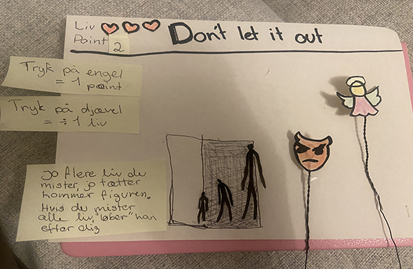
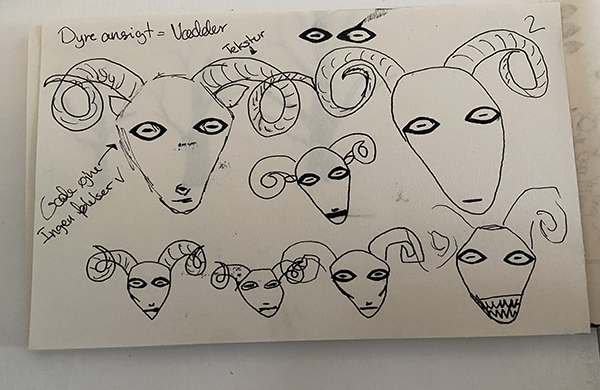
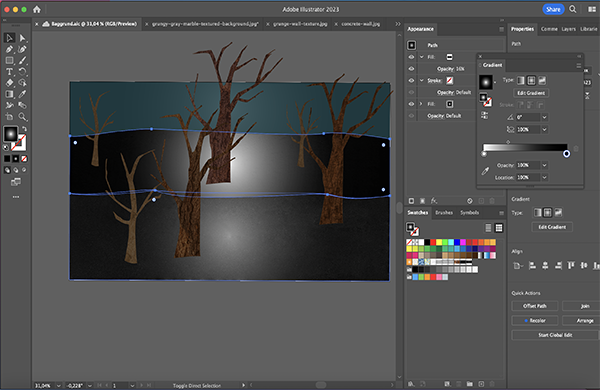

TEMA 04
GRUNDLÆGGENDE ANIMATION
GRUNDLÆGGENDE ANIMATION
GRUNDLÆGGENDE ANIMATION


I tema 04 udforskede vi grundlæggende animationer med målet at udvikle vores eget spil. Her blev vi introduceret til brugen af JavaScript og CSS-animationer. JavaScript blev anvendt til at implementere forskellige animationseffekter, såsom at få UI-elementer til at "falde" øverst på skærmen. Dette blev opnået ved hjælp af funktioner som "document.querySelector" og "addEventListener".
Senere, i forbindelse med tema05 og 06, udnyttede jeg igen JavaScript til at skabe en responsiv navbar. Dette involverede blandt andet brugen af "addEventListener" til at implementere en burgermenu.
Samtidig blev vi introduceret til formgivnings- og kompositionsprincipper, der er afgørende for designet af brugergrænseflader og spilelementer. Vi arbejdede med skitsering og udvikling af ideer og visuelle koncepter, hvor Adobe Illustrator blev anvendt. Jeg valgte at bruge stilen "Year Walk" og baseret på en selvudarbejdet stilanalyse skabte jeg mine egne spilelementer.
Se løsningen hér
